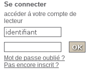
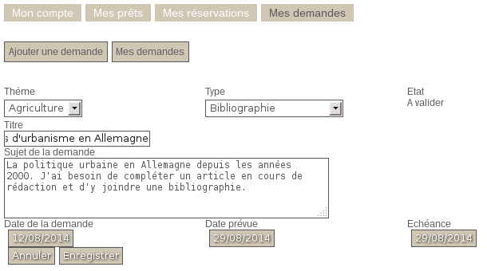

Soumettre une demande
Les lecteurs peuvent soumettre leurs demandes de recherche depuis la partie Mon compte de l'OPAC.
ProcédureEnregistrer une demande de recherche dans l'OPAC⚓
Se connecter en tant que lecteur dans l'OPAC
- Saisir un identifiant et le mot de passe correspondant puis cliquer sur
OK.
- Saisir un identifiant et le mot de passe correspondant puis cliquer sur
Depuis l'écran
Mon compte, dans l'ongletMes demandescliquer surAjouter une demandeCompléter le formulaire de demande de recherche
- Sélectionner un
thèmeet untype - Compléter le
titre, et éventuellement lesujet - Sélectionner une
échéanceà l'aide du calendrier
- Sélectionner un
Valider en cliquant sur
EnregistrerUne fois enregistrée la demande de recherche est affichée à l'écran, à ce stade son état est
à valider.
Les utilisateurs peuvent aussi enregistrer des demandes pour les lecteurs depuis l'onglet Demandes.
ProcédureEnregistrer une demande de recherche en gestion⚓
Aller dans
Demandes>Listes:Toutes les demandesCliquer sur
Nouvelle demandeCompléter le formulaire de saisie d'une demande
- Sélectionner un
thèmeet untype - Sélectionner un
état: à valider si la demande doit être examinée avant d'être traitée, validé si la demande est directement traitée - Laisser vide la
progression: à ce stade la demande n'a pas encore d'action - Saisir un
titreet unsujet - Sélectionner la
date de la demande: généralement la date du jour - Sélectionner une
échéancedemandée et éventuellement unedate prévue - Sélectionner un
demandeur: le nom du lecteur - Si la demande a était validée précédemment, sélectionner l'utilisateur auquel est
attribuéela demande
Remarque
Il faut au minimum renseigner un
titreet sélectionner undemandeurpour pouvoir enregistrer.Remarque
Il est possible, depuis la version 4.2 de PMB d'ajouter de nouveaux champs à un formulaire de demande.
Le paramétrage s'effectue dans l'onglet
Administration>Modules:Demandes>Personnalisables.Il est nécessaire d'
Indexer pour activer la recherche dans ce champpour que le nouveau critère soit disponible dans le formulaire de recherche du module demande.- Sélectionner un
Enregistrerpour valider la nouvelle demande